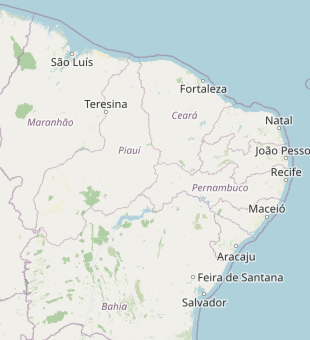

Pattern canonico AUDIPER · 5 aneis concentricos sobre base OpenStreetMap · usado em pareceres, propostas, dossies.

Sede AUDIPER · Centro
Teresina + Timon
Floriano, Picos, Parnaiba
Piaui inteiro
9 estados · capilaridade